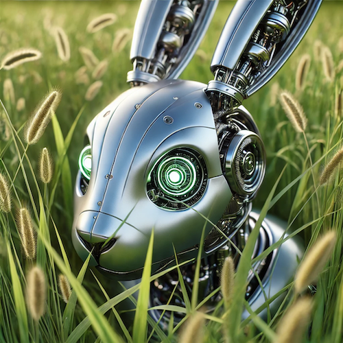

Project Portfolio

Project 3: Biomimetic Fish Tail Mechanism
Inspired By: The Yellowfin Tuna
The Goal: Build a robotic fish tail that converts a motor's continuous spin into a realistic side-to-side swimming wiggle.
- Biomimicry in Action: Real tuna keep their main bodies stiff and flick their back tail fin to swim efficiently. This model mimics that movement by turning single-direction motor energy into a natural side-to-side sweeping motion.
- Flexible Tail Wave: To make the tail look like a real fish wave instead of a stiff stick, I connected a few technic beams and a flex rod. The tube acts like a spine/tendon, creating an organic S-curve wave as the tail sweeps.
